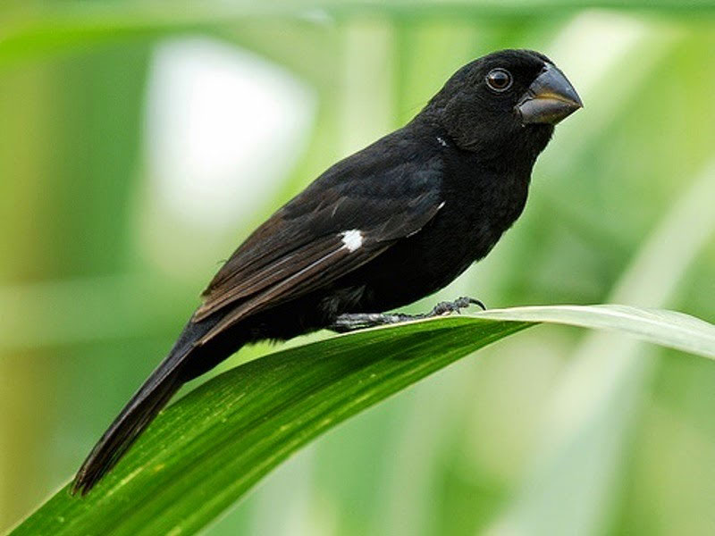
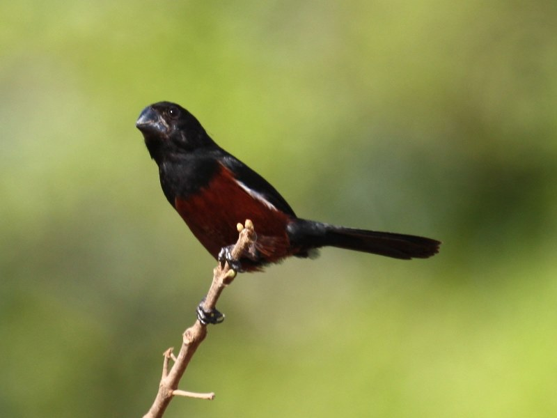
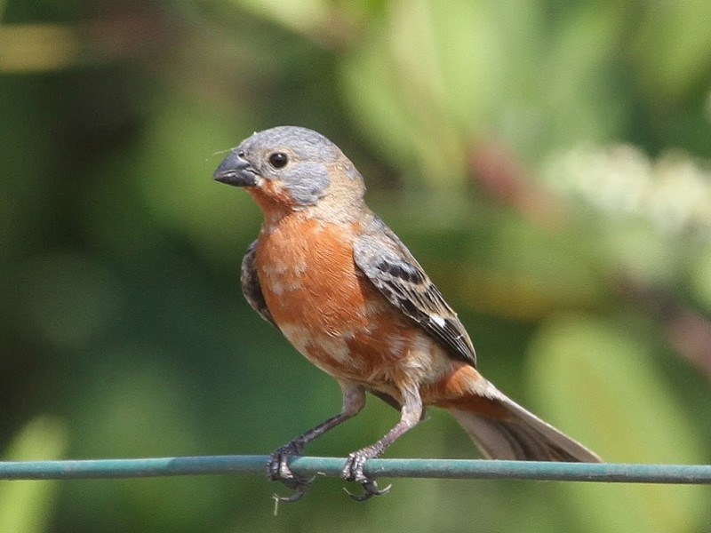

Twatwa

Picolet

Rowti
Ik heb zelf een paar Twatwa's. Het zijn zwarte zangvogels die voorkomen in de natuur van Suriname. Tegenwoordig worden ze ook gebroed en gekweekt in Nederland. Klik op de namen onder de foto's voor meer informatie. Er worden ook zangwedstrijden georganiseerd. Het gaat er dan om welke vogel het meeste kan zingen binnen vijftien minuten. Wedstrijden zijn onder 1 soort onderling, dus Twatwa tegen Twatwa en Picolet tegen Picolet. Voor meer informatie, kijk onderaan deze website. Daar vindt u links naar website's van diverse vogelverenigingen.
Wedstrijden beginnen op 25 juli 2022! Schrijf je tijdig in bij een van de onderstaande Vogelverenigingen. Vergeet niet om de contributie tijdig over te maken, aub.